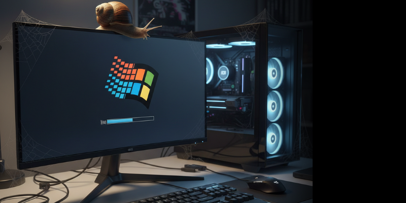

Programas que deixam o Windows lento (e como resolver)
Publicado em
Um dos principais motivos para a lentidão do Windows não está no hardware, mas nos programas instalados e em como eles se comportam no sistema. Muitos softwares consomem recursos em segundo plano, iniciam automaticamente com o Windows ou realizam tarefas desnecessárias sem que o usuário perceba. Com o tempo, isso afeta diretamente o desempenho do computador.
Programas que iniciam junto com o Windows são um dos maiores responsáveis pela lentidão. Mesmo softwares legítimos, como aplicativos de comunicação, ferramentas de atualização automática e utilitários do próprio fabricante do computador, podem sobrecarregar o sistema logo na inicialização. Quanto mais processos são carregados ao mesmo tempo, maior é o tempo de inicialização e menor é a resposta do sistema.
Outro fator comum são programas que permanecem ativos em segundo plano, consumindo memória RAM e processamento mesmo quando não estão sendo utilizados. Muitos desses softwares executam verificações constantes, sincronizações automáticas ou serviços que raramente são necessários no dia a dia. Em computadores com configurações mais modestas, esse comportamento impacta ainda mais o desempenho.
Softwares de segurança mal configurados ou instalados de forma incorreta também podem deixar o Windows lento. Antivírus piratas, desatualizados ou múltiplos programas de segurança rodando ao mesmo tempo geram conflitos e uso excessivo de recursos. Um único antivírus confiável, bem configurado e atualizado é suficiente para manter o sistema protegido sem comprometer a performance.
Programas desnecessários instalados ao longo do tempo são outro problema frequente. Muitos usuários instalam softwares para testes pontuais e acabam esquecendo de removê-los. Esses programas podem adicionar serviços, tarefas agendadas e entradas na inicialização do sistema, mesmo sem serem utilizados. A limpeza periódica desses softwares ajuda a manter o Windows mais leve e estável.
Além disso, programas desatualizados podem causar lentidão e instabilidade. Atualizações não servem apenas para adicionar recursos, mas também corrigem falhas de desempenho e segurança. Manter o sistema operacional e os principais programas sempre atualizados contribui para um funcionamento mais eficiente do Windows.
Resolver problemas de lentidão causados por programas exige mais do que simplesmente desinstalar tudo. O ideal é realizar uma análise do sistema, identificar quais processos consomem mais recursos, ajustar a inicialização do Windows e remover apenas o que realmente não é necessário. Esse tipo de otimização melhora o desempenho sem comprometer a funcionalidade do computador.
A manutenção preventiva do Windows evita que esses problemas se acumulem com o tempo. Ajustes simples, quando feitos corretamente, podem devolver fluidez ao sistema, reduzir travamentos e aumentar a vida útil do computador. Um Windows lento nem sempre significa computador velho, mas sim um sistema que precisa de organização e otimização.